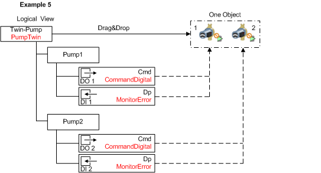
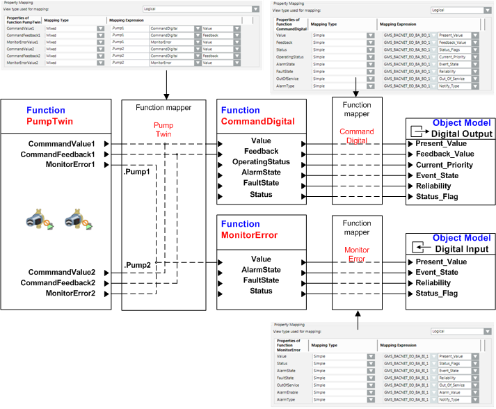

Mixed Mapping
Mixed mapping is used to map two or multiple objects with the same object information to one object. Typical examples are fans, pumps, dampers operated in parallel in terms of functionality.

Example 5 shows Pump1 and Pump2 with additionally engineered hierarchy object below the PumpTwin Function. Each hierarchy object has a subordinate CommandDigital and MonitorError Function for its functionality. Making the hierarchical objects .Pump1 and Pump.2 part of the TwinPump Function results in unique individual object information.
During graphic engineering, drag-and-drop takes place on the object hierarchy of Twin-Pump. The properties of both pumps are displayed during operation in the Operation tab of Twin-Pump.
